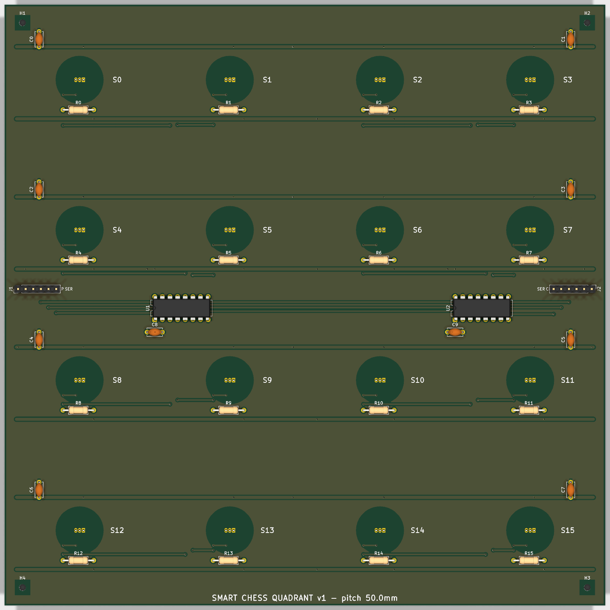
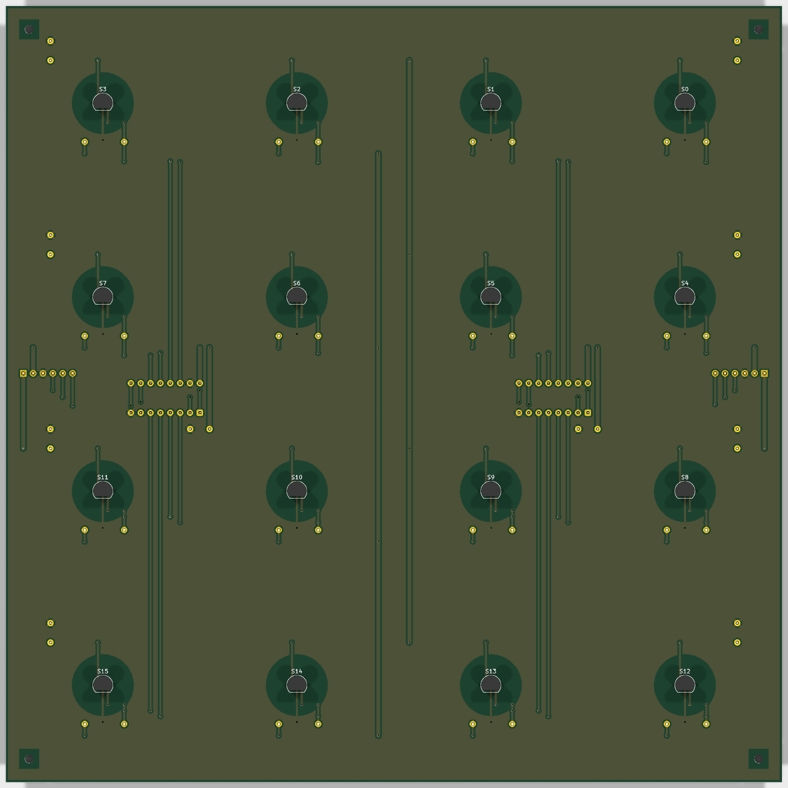

4 identical boards to assemble (1 more board is a spare — do NOT populate) · Board: 200×200mm, 2-layer · 46 parts / 144 joints per board, ALL through-hole (no SMD) · Leaded solder
| Bag | Part | Per board | Total (4 boards + spares) | Where | Positions on board |
|---|---|---|---|---|---|
| 1 | A3144 hall sensor (TO-92, 3 legs) | 16 | 70 (pre-tested; extras are spares) | BOTTOM side | S0 – S15 |
| 2 | 10k resistor (axial) | 16 | 70 | Top side | R0 – R15 |
| 3 | 100nF ceramic disc capacitor | 10 | 45 | Top side | C0 – C9 |
| 4 | 74HC165 IC (DIP-16) | 2 | 9 | Top side | U1, U2 — notch matches silkscreen notch |
| 5 | Pin header 1×6 (2.54mm, vertical) | 2 | 9 | Top side | J1, J2 |
Resistors, capacitors, headers: not polarized — any direction is fine. ICs: match the notch. Sensors: see the red box below — this is the whole job's one risk.
These sensors go on the BOTTOM of the board, and they are REVERSED vs normal parts.
The printed TEXT side of the sensor must face the FLAT side of the white outline printed on the PCB. (Normal parts face the other way — these are mirror-pinout clones. Inserting them the normal way puts 5V into the output pin and destroys the sensor.)
MANDATORY FIRST STEP — do not skip:
After inserting the legs, bend each sensor 90° so the body lies flat against the PCB, TEXT face touching the board. Do not leave sensors standing upright — an upright sensor cannot detect the magnet. Bend gently at the legs, then solder. All other parts: normal.

TOP: R0–R15, C0–C9, U1, U2, J1 (left edge), J2 (right edge)

BOTTOM: S0–S15 at square centers — labels printed on this side. Remember: TEXT side of each sensor faces the FLAT side of its outline.